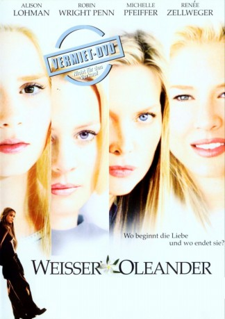

#5278 Weißer Oleander
Alternativ: White Oleander
 
 IMDB-Wertung: 7.2 / 10
IMDB-Wertung: 7.2 / 10  Metascore: 0
Metascore: 0 
Ingrid dreht durch, als sie erfährt, das ihr Mann sie verlassen will und vergiftet ihn mit Oleander-Extrakt. Daraufhin kommt sie ins Gefängnis und ihre Tochter Astrid wandert von einer Pflegefamilie zur nächsten, bis sie schließlich bei Claire landet, bei der es ihr endlich wieder besser geht
Jahr: 2002
Dauer: 109 Minuten
FSK: 12
Land: USA Studio: Warner Bros.Tonspuren: DD5.1 - ,
Untertitel:
Auflösung: 720p (1272x712) Größe: 4577 MB
Genre: Drama
Regisseur: Peter Kosminsky
Drehbuch: Luchino Visconti
Soundtrack:
Darsteller:
 Amy Aquino als Miss Martinez
Amy Aquino als Miss Martinez John Billingsley als Paramedic
John Billingsley als Paramedic- Sam Catlin als Teacher
- Debra Christofferson als Marlena
 Billy Connolly als Barry Kolker
Billy Connolly als Barry Kolker- Marc Donato als Davey Thomas
- Svetlana Efremova als Rena Gruschenka
 Patrick Fugit als Paul Trout
Patrick Fugit als Paul Trout Cole Hauser als Ray
Cole Hauser als Ray- Leila Kenzle als Ann Greenway
- Cathy Ladman als Swap Meet Mother
- James Lashly als Reverend Daniels
 Alison Lohman als Astrid Magnussen
Alison Lohman als Astrid Magnussen- Daniel Mandehr als Dad at Induction Area
 Taryn Manning als Niki
Taryn Manning als Niki- Melissa Marsala als Julie
 Melissa McCarthy als Paramedic
Melissa McCarthy als Paramedic- Roger McIntyre als Police Officer
- Dallas McKinney als Owen
- Brian Mulligan als Bailiff
- Allison Munn als Hannah
 Robin Wright als Starr
Robin Wright als Starr Michelle Pfeiffer als Ingrid Magnussen
Michelle Pfeiffer als Ingrid Magnussen Kali Rocha als Susan Valeris
Kali Rocha als Susan Valeris Stephen Root als Michael , scenes deleted
Stephen Root als Michael , scenes deleted- Samantha Shelton als Yvonne
- Mark Soper als Patrick
 Liz Stauber als Carolee
Liz Stauber als Carolee- James 'Kimo' Wills als Comic Book Store Clerk
 Noah Wyle als Mark Richards
Noah Wyle als Mark Richards Biff Yeager als Judge
Biff Yeager als Judge Renée Zellweger als Claire Richards
Renée Zellweger als Claire Richards- Mary Elizabeth Barrett als Sign Language Interpreter , uncredited
- Allen Lee Haff als Soldier , uncredited
- Terence Leclere als Russian Punk , uncredited
- Kiosha Lee als Juvenile Delinquent , uncredited
- Margarita Reyes als Juvenile in Van with Astrid and Paul , uncredited
 Gary Sievers als Member of Bowling Team , uncredited
Gary Sievers als Member of Bowling Team , uncredited- Bree Michael Warner als Apartment Girl , uncredited
- Elisa Bocanegra als Girl in Fight
- Darlene Bohorquez als Prisoner
- Solomon Burke Jr. als Guard
- Scott Allan Campbell als Bill Greenway
- Vernon Haas als Guard
- Sean Happy als Dirt Bike Boyfriend
- Drinda Lalumia als Patty
- Myra Lamar als Detective
- James W. Lee als Prison Visitor
- DeVonda Manghane als Guard at X-Ray Machine
- Jennifer Saxon als Swap Meet Daughter
Datei: X:\2002\Weißer Oleander (2002, FSK12, 1272x712).mkv seit 09.01.2017
Festplatte: HD 1996-2002
 Es gibt insgesamt 93 Filme in der Gruppe '2002'
Es gibt insgesamt 93 Filme in der Gruppe '2002'